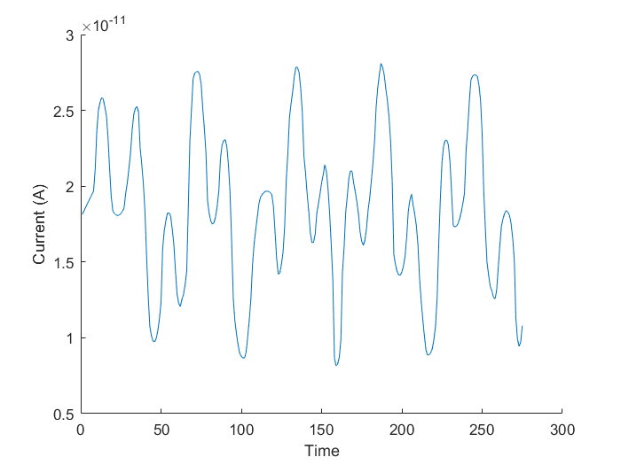

The results of our circuit fourier transform are shown in the graph above. The frequencies present in our signal are just below 200 and around 500 Hz. The results are a little off and we suspect it's due to the small differences in waveforms between the circuit and ideal generated waves, which illistrates the circuit waveform is a little inaccurate. We compare the two waves below.
The above image is the graph of the combined wave form in our simulated circut. It's important to note the graph is not centered at the x-axis. We need to transfer it to be centered at the x-axis because this allows the integration to approach zero for not relevant frequencies and approach the amplitude of the frequencies present in the signal.
The above image is the software generated combined waveform. This waveform is centered at the x-axis.
For both of the waveforms, both circuit and software generated, we used 200 and 564 Hz sine waves. There are small differences between the two graphs beyond just the scaling of the two. The waves are very similar, but the small differences we believe are contributing to the error in the fourier transform. If we were to go further we would test this theory. The output wave from the combined real and imaginary parts of the waveform were even further off between the ideal and circuit generated.